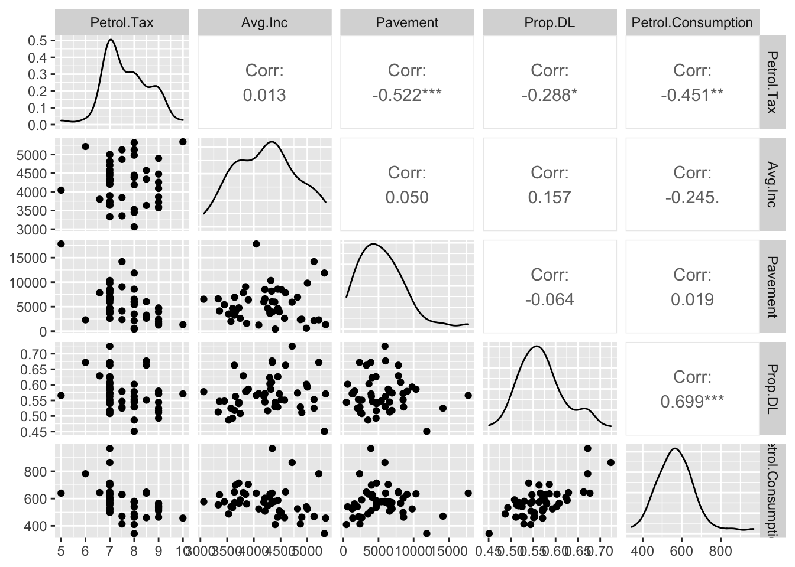
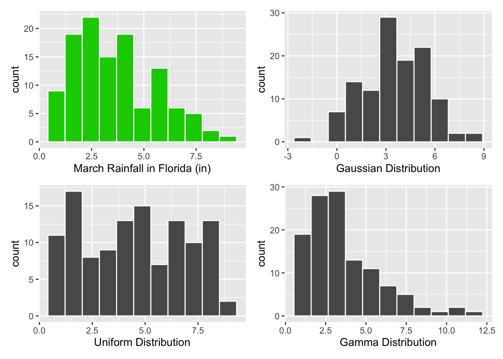
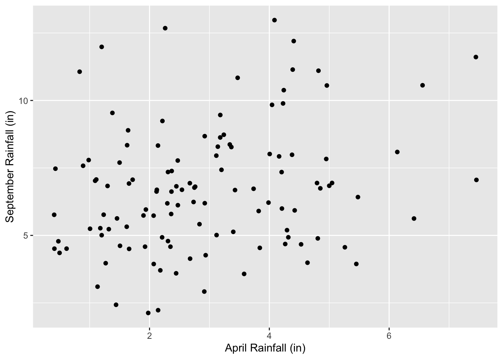
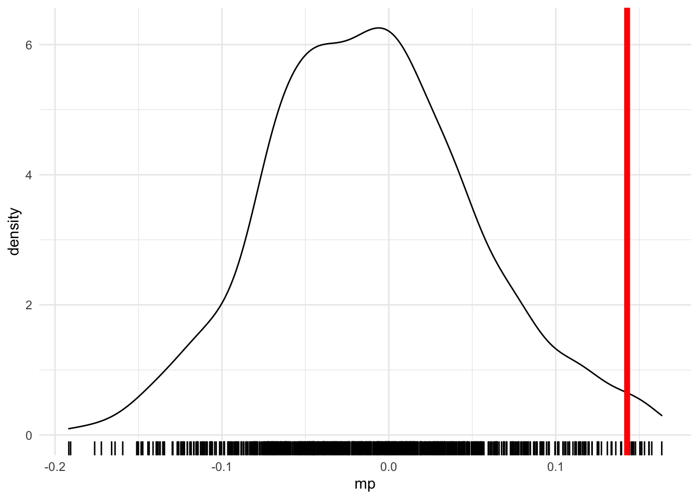
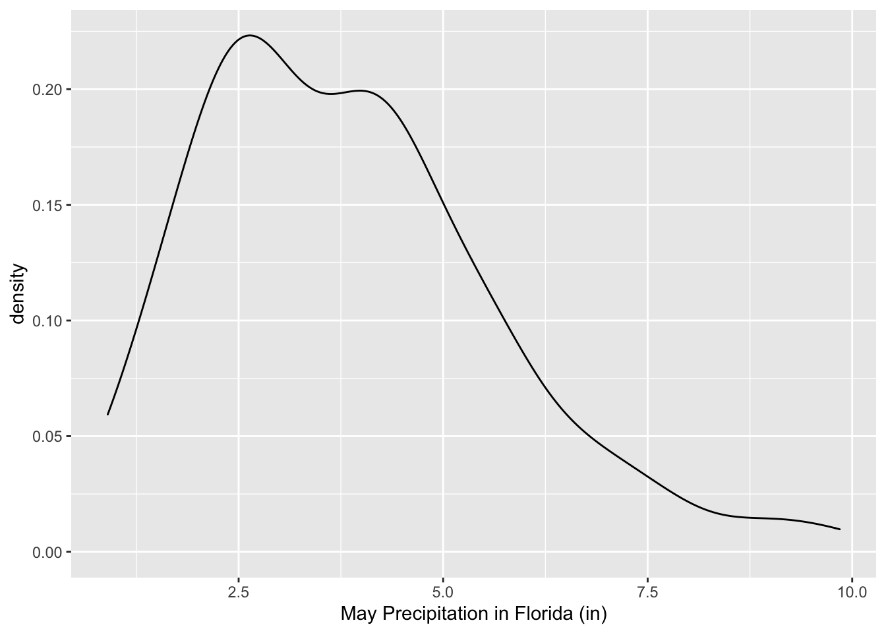

Thursday, November 3, 2022
Today
- Spatial autocorrelation
When your data set contains observations made across space (spatial data), the assumption of independent values is usually not valid. This is because nearby locations tend to have similar values.
Similarity in observations that are nearby arises from:
Association: whatever is causing an observation to have a certain value in one area causes the observation to have a similar value in areas nearby. Crime rates in nearby neighborhoods might tend to cluster due to similar factors such as economic status and the amount of policing. Non-infectious diseases (e.g., lung cancer) might have similar rates in neighborhoods close to an oil refinery.
Causality: something within an area directly influences outcomes within nearby areas. The broken window theory of crime suggests that poverty, lack of maintenance, and petty crime tends to breed more crime due to a perceived breakdown in civil order.
Interaction: the movement of people, goods or information creates relationships between nearby areas. Infectious diseases might spread from a source region thus increasing the disease rates in surrounding areas as the direct result of contact or movement of people between regions.
We quantify how similar nearby values tend to be through a metric called spatial autocorrelation. Statistical methods can quantify, and condition on, spatial autocorrelation but they are silent about it’s physical cause.
Understanding the reason for spatial autocorrelation is important for causal inference because the causal mechanism might be statistically confounded by it. Divorce rates are high in states in the South but so to are the number of Waffle Houses.
Understanding the potential causes of spatial autocorrelation requires domain specific knowledge.
Quantifying autocorrelation in spatial data
When values are aggregated into spatial regions, autocorrelation is quantified by how similar a value in region \(i\) is to the value in region \(j\) and weighting this similarity by how ‘close’ region \(i\) is to region \(j\). Closer regions are given more weight.
High similarities with high weight (similar values close together) yield high values of spatial autocorrelation. Low similarities with high weight (dissimilar values close together) yield low values of spatial autocorrelation.
Let \(\hbox{sim}_{ij}\) be a measure of similarity between values \(Y_i\) and \(Y_j\), and let \(w_{ij}\) be a set of weights inversely proportional to the distances between regions \(i\) and \(j\), for all \(i\), \(j\).
Then a spatial autocorrelation index (SAI) will have the form \[ \hbox{SAI} = \frac{\sum_{i,j=1}^N w_{ij}\hbox{sim}_{ij}}{\sum_{i,j=1}^N w_{ij}} \]
The set of weights is called a spatial weights matrix and \(N\) is the number of observations. The spatial weights matrix defines the neighbors and the strength of their relationship.
The spatial unit of observation can be points or polygons. Temperatures measured by thermometers across the cities is an example of point observations. The number of people living within a census block is an example of polygon observations.
Spatial data as polygons
Consider crime data at the census tract level in the city of Columbus, Ohio. The data are available in a zipped folder containing ESRI shapefiles on my website. Here you use the download.file() function and then the unzip() function to get the data into our project folder.
url <- "http://myweb.fsu.edu/jelsner/temp/data/columbus.zip"
download.file(url,
destfile = here::here("data", "columbus.zip"))
unzip(zipfile = here::here("data", "columbus.zip"),
exdir = here::here("data"))Then you use the read_sf() function from the {sf} package to get the data into your current session. You assign the spatial data frame the name CC.sf.
CC.sf <- sf::read_sf(dsn = here::here("data", "columbus"),
layer = "columbus")The spatial data frame contains crime rates (residential burglaries and vehicle thefts per 1000 households) in the column labeled CRIME. There is one crime rate for each census tract polygon. The data frame also contains housing values and median household income in units of 1000 of dollars.
The object CC.sf behaves as a regular data frame but it is also has a simple feature class (sf) that indicates a column containing the geographic information.
class(CC.sf)## [1] "sf" "tbl_df" "tbl" "data.frame"Simple features is an open standard from the Open Geospatial Consortium (OGC) for representing geographic information as a spatial data frame. Simple features condense geographic forms into a single geometry class. The standard is implemented in spatial databases (e.g., PostGIS), commercial GIS (e.g., ESRI) and forms the vector data basis for libraries such as GDAL.
Functions in the {sf} package can be used to manipulate vector geometry types including points, lines, polygons and their respective ‘multi’ versions (which group together features of the same type into a single feature). The geometry is a list column in the simple feature data frame with the label geometry.
To print the column names type
names(CC.sf)## [1] "AREA" "PERIMETER" "COLUMBUS_" "COLUMBUS_I" "POLYID"
## [6] "NEIG" "HOVAL" "INC" "CRIME" "OPEN"
## [11] "PLUMB" "DISCBD" "X" "Y" "NSA"
## [16] "NSB" "EW" "CP" "THOUS" "NEIGNO"
## [21] "geometry"The first twenty columns in the spatial data frame contain observations (attributes) and the last column contains the geometry information associated with each observation (row). The geometry column contains the spatial coordinates in well-known text (WKT) format.
The {sf} package has a plot() method for viewing the geographic data on a map. For example to plot the census tract borders in the city of Columbus we apply the method to the geometry column of the spatial data frame.
plot(CC.sf$geometry)
The sf spatial objects behave as regular data frames. For example, the summary() method, gives an overview of the variables and the spatial information. Here you summarize the data in the CRIME column.
summary(CC.sf["CRIME"])## CRIME geometry
## Min. : 0.1783 POLYGON:49
## 1st Qu.:20.0485 epsg:NA: 0
## Median :34.0008
## Mean :35.1288
## 3rd Qu.:48.5855
## Max. :68.8920You see that the median crime rate is about 34 cases per 1000 households.
Although you selected the variable CRIME the output also includes a summary on the geometry column. Here the information tells you that there are 49 polygons (49 census tracts) and no coordinate information.
You can create choropleth maps from sf objects with the base plot() method (plot.sf()). For example, to create a choropleth map of the crime variable you subset on the variable name.
plot(CC.sf["CRIME"])
You can also make maps with functions from the {tmap} package.
library(tmap)
tm_shape(CC.sf) +
tm_fill("CRIME",
title = "") +
tm_borders(col = "gray70") +
tm_layout(title = "Burglary & Vehicle Thefts\n/1000 Households",
legend.outside = TRUE)## Warning: Currect projection of shape CC.sf unknown. Long-lat (WGS84) is assumed.
And with functions from the {ggplot2} package.
library(ggplot2)
ggplot(data = CC.sf) +
geom_sf(mapping = aes(fill = CRIME), col = "gray70") +
ggtitle("Burglary & Vehicle Thefts/1000 Households")The map shows that high crime areas tend to cluster. That is census tracts with high crime rates tend to be adjacent to other tracts with high rates.
Spatial autocorrelation quantifies the amount of clustering. To compute the spatial autocorrelation you first need to define a list of neighbors for each tract (each polygon).
List of neighbors
You create a list of neighbors for each tract using the poly2nb() function from the {spdep} package.
nbs <- spdep::poly2nb(CC.sf)
nbs## Neighbour list object:
## Number of regions: 49
## Number of nonzero links: 236
## Percentage nonzero weights: 9.829238
## Average number of links: 4.816327See also the new package {sfdep}. https://sfdep.josiahparry.com/
The function builds a list of neighbors for each polygon based on contiguity. Neighbors must share one or more boundary points. The default contiguity is defined as having at least one point in common (called queen contiguity). This is changed with the argument queen = FALSE.
There are 49 polygons (census tracts). Each polygon is bordered by at least one other polygon (each polygon is bordered by at least one polygon). The average number of neighboring polygons is 4.8. The total number of neighboring polygons over all tracts is 236. This represents 9.8% of all possible neighbors (if every polygon is a neighbor of itself and every other polygon 49 * 49).
You make a graph the neighbors with the plot() method. The arguments include the neighbor list object (nbs) and the location of the polygon centers, which are extracted from the simple feature data frame using the st_centroid().
plot(nbs,
sf::st_centroid(CC.sf$geometry))
The graph is a network of nodes and links showing the contiguity (topology). Each node is a tract and each link indicates spatial contiguity. The graph makes it clear that tracts in the center of the city have more neighbors than tracts away from the center.
The number of links per node [link number distribution] is obtained with the summary() method applied to the neighborhood list object.
summary(nbs)## Neighbour list object:
## Number of regions: 49
## Number of nonzero links: 236
## Percentage nonzero weights: 9.829238
## Average number of links: 4.816327
## Link number distribution:
##
## 2 3 4 5 6 7 8 9 10
## 5 9 12 5 9 3 4 1 1
## 5 least connected regions:
## 1 6 42 46 47 with 2 links
## 1 most connected region:
## 20 with 10 linksYou print the neighboring tracts for the first two tracts using the double bracket notation.
nbs[[1]]## [1] 2 3nbs[[2]]## [1] 1 3 4The first tract has two neighbors that include tracts 2 and 3. The neighbor numbers are stored as an integer vector. Tract 2 has three neighbors that include tracts 1, 3, and 4. Tract 5 has 8 neighbors and so on. The function card() tallies the number of neighbors by tract.
spdep::card(nbs)## [1] 2 3 4 4 8 2 4 6 8 4 5 6 4 6 6 8 3 4 3 10 3 6 3 7 8
## [26] 6 4 9 7 5 3 4 4 4 7 5 6 6 3 5 3 2 6 5 4 2 2 4 3Tract 5 has 8 neighbors.
Spatial weights matrix
Next you add weights to the neighbor list object. The weights specifying how ‘close’ each neighbor is. You do this with the nb2listw() function from the {spdep} package. The function turns the neighbor list object into a spatial weights object.
wts <- spdep::nb2listw(nbs)
class(wts)## [1] "listw" "nb"This new wts object is a list with two elements. The first element (listw) is the weights matrix and the second element (nb) is the neighbor list object.
summary(wts)## Characteristics of weights list object:
## Neighbour list object:
## Number of regions: 49
## Number of nonzero links: 236
## Percentage nonzero weights: 9.829238
## Average number of links: 4.816327
## Link number distribution:
##
## 2 3 4 5 6 7 8 9 10
## 5 9 12 5 9 3 4 1 1
## 5 least connected regions:
## 1 6 42 46 47 with 2 links
## 1 most connected region:
## 20 with 10 links
##
## Weights style: W
## Weights constants summary:
## n nn S0 S1 S2
## W 49 2401 49 22.75119 203.7091By default all neighboring tracts are assigned a weight equal to the inverse of the number of neighbors (style = "W"). For a tract with 5 neighbors each neighbor gets a weight of 1/5. The sum over all weights (S0) is the number of tracts.
To see the weights for the first two tracts type
wts$weights[1:2]## [[1]]
## [1] 0.5 0.5
##
## [[2]]
## [1] 0.3333333 0.3333333 0.3333333The $weights list is the spatial weights matrix.
To see the neighbors of the first two tracts type
wts$neighbours[1:2]## [[1]]
## [1] 2 3
##
## [[2]]
## [1] 1 3 4Tract 1 has two neighbors (tract 2 & 3) so each are given a weight of 1/2. Tract 2 has three neighbors (tract 1, 3, & 4) so each are given a weight of 1/3.
With the weights matrix specified and saved as an object you are ready to quantify the amount of spatial autocorrelation.
Caution: Using contiguity as a indicator of closeness can result in areas having no neighbors; islands for example.
By default the nb2listw() function assumes each area has at least one neighbor. If this is not the case you need to specify how areas without neighbors are handled using the argument zero.policy = TRUE. This allows the weights list to be formed with zero-length vectors.
For example, consider the districts in Scotland.
url <- "http://myweb.fsu.edu/jelsner/temp/data/scotlip.zip"
download.file(url,
destfile = here::here("data", "scotlip.zip"))
unzip(zipfile = here::here("data", "scotlip.zip"),
exdir = here::here("data"))
SL.sf <- sf::read_sf(dsn = here::here("data", "scotlip"),
layer = "scotlip")
plot(SL.sf$geometry)
Here there are three island districts.
Create a list of neighbors.
( nbs2 <- spdep::poly2nb(SL.sf) )## Neighbour list object:
## Number of regions: 56
## Number of nonzero links: 234
## Percentage nonzero weights: 7.461735
## Average number of links: 4.178571
## 3 regions with no links:
## 6 8 11Three regions with no links.
Use the nb2listw() function with the argument zero.policy = TRUE. Otherwise you will get an error saying the empty neighbor sets are found.
wts2 <- spdep::nb2listw(nbs2,
zero.policy = TRUE)
head(wts2$weights)## [[1]]
## [1] 0.3333333 0.3333333 0.3333333
##
## [[2]]
## [1] 0.5 0.5
##
## [[3]]
## [1] 1
##
## [[4]]
## [1] 0.3333333 0.3333333 0.3333333
##
## [[5]]
## [1] 0.3333333 0.3333333 0.3333333
##
## [[6]]
## NULLHere we see that district 6 in Scotland has no neighbors.
Moran’s I
Moran’s I follows the basic form of spatial autocorrelation indexes where the similarity between regions \(i\) and \(j\) is proportional to the product of the deviations from the mean such that \[ \hbox{sim}_{ij} \propto (Y_i - \bar Y) (Y_j - \bar Y) \]
where \(i\) indexes the region (areal unit) and \(j\) indexes the neighbors of \(i\). The value of \(\hbox{sim}_{ij}\) is large when the \(Y\) values in the product are on the same side of their respective means and small when they are on opposite sides of their respective means.
The formula for I is \[ \hbox{I} = \frac{N} {W} \frac {\sum_{i,j} w_{ij}(Y_i-\bar Y) (Y_j-\bar Y)} {\sum_{i} (Y_i-\bar Y)^2} \] where \(N\) is the number regions, \(w_{ij}\) is the matrix of spatial weights, and \(W\) is the sum over all weights.
Consider the following spatial grid of cells containing random values.
set.seed(6750)
Y <- spatstat.geom::ppp(runif(200, 0, 1),
runif(200, 0, 1))## Registered S3 method overwritten by 'spatstat.geom':
## method from
## print.boxx cliplot(spatstat.geom::quadratcount(Y), main = "")
The formula for I results in one value for the entire grid.
First consider a single cell on the grid (\(N\) = 1). Here the middle cell (row 3, column 3). Let \(i\) = 3 in the above formula and let \(j\) index the cells touching the center cell in reading order starting with cell (2, 2), then cell (2, 3), etc.
Assume each neighbor is given a weight of 1/8 so \(W\) = 1. Then the value of I for the single center cell is I_{3, 3} = (6 - mean(y)) * ((8 - mean(y)) + (3 - mean(y)) + (9 - mean(y)) + (12 - mean(y)) + (10 - mean(y)) + (10 - mean(y)) + (9 - mean(y))) / (6 - mean(y))^2)
y <- c(3, 10, 7, 12, 5, 11, 8, 3, 9, 12,
6, 12, 6, 10, 3, 8, 10, 10, 9, 7,
5, 10, 8, 5, 11)
yb <- mean(y)Inum_i <- (6 - yb) *
((8 - yb) + (3 - yb) + (9 - yb) +
(12 - yb) + (10 - yb) + (10 - yb) +
(10 - yb) + (9 - yb))
Iden_i <- (6 - yb)^2
Inum_i/Iden_i## [1] -3.5The I value of -3.5 indicates that the center cell which has a value less than the average over all 25 cells is surrounded by cells with values above the average.
Now repeat this calculation for every cell and then add all the results.
This is done with the moran() function from the {spdep} package. The first argument is the vector containing the values for which we are interested in determining the magnitude of the spatial autocorrelation and the second argument is the listw object.
We also need to specify the number of regions and the global sum of the weights S0. The latter is obtained from the Szero() function applied to the listw object.
Returning to the Columbus crime data here we let m be the number of census tracts and s be the sum of the weights.
m <- length(CC.sf$CRIME)
s <- spdep::Szero(wts)
spdep::moran(CC.sf$CRIME,
listw = wts,
n = m,
S0 = s)## $I
## [1] 0.5001886
##
## $K
## [1] 2.225946The function returns the Moran’s I value and the kurtosis (K) of the distribution of crime values. Values for Moran’s I range between -1 to +1. Positive values of Moran’s I indicate clustering. The value of .5 for the crime rates indicates fairly high spatial autocorrelation. This is expected based on what you saw in the maps showing a clustering of crime.
Kurtosis is a statistic that indicates how ‘peaked’ the distribution of values is relative to a normal (bell-shaped) distribution. A normal distribution has a kurtosis of 3. If the kurtosis is too large or too small relative to a normal distribution (greater than about 4 or less than about 2) then any inference you make about clustering might be incorrect.
Another measure of the amount of spatial autocorrelation is the Geary’s C statistic. Geary’s C is computed as \[ \hbox{C} = \frac{(N-1) \sum_{i,j} w_{ij} (Y_i-Y_j)^2}{2 W \sum_{i}(Y_i-\bar Y)^2} \] where \(W\) is the sum over all weights (\(w_{ij}\)) and \(N\) is the number of areas.
The syntax of the geary() function is similar to the syntax of the moran() function except you also specify n1 to be one minus the number of polygons.
spdep::geary(CC.sf$CRIME,
listw = wts,
n = m,
S0 = s,
n1 = m - 1)## $C
## [1] 0.5405282
##
## $K
## [1] 2.225946Values for Geary’s C range from 0 to 2 with 1 indicating no spatial autocorrelation. Values less than 1 indicate positive autocorrelation. Both I and C are global measures of autocorrelation, but C is more sensitive to local variations in autocorrelation.
Rule of thumb: If the interpretation of Geary’s C is much different than the interpretation of Moran’s I then consider computing local measures of spatial autocorrelation.
Spatial lag variable
Moran’s I is the slope coefficient from a regression of the weighted average of the neighborhood values onto the observed values. The weighted average of neighborhood values is called the spatial lag.
Let crime be the set of crime values in each region. You create a spatial lag variable using the lag.listw() function. The first argument is the listw object and the second is the vector of crime values.
crime <- CC.sf$CRIME
Wcrime <- spdep::lag.listw(wts,
crime)For each value in the vector crime there is a corresponding value in the vector Wcrime representing the average crime over the neighboring regions.
Recall tract 1 had tract 2 and 3 as its only neighbors. So the following should return a TRUE.
Wcrime[1] == (crime[2] + crime[3])/2## [1] TRUEA scatter plot of the neighborhood average crime rates versus the individual polygon crime rates in each shows there is a relationship.
library(ggplot2)
data.frame(crime, Wcrime) |>
ggplot(aes(x = crime, y = Wcrime)) +
geom_point() +
geom_smooth(method = lm) +
scale_x_continuous(limits = c(0, 70)) +
scale_y_continuous(limits = c(0, 70)) +
xlab("Crime") +
ylab("Average Crime in the Neighborhood") +
theme_minimal()## `geom_smooth()` using formula 'y ~ x'
The vertical axis contains the neighborhood average crime rate. The range of neighborhood averages is smaller than the range of individual polygon crime rates.
Tracts with low values of crime tend to be surrounded by tracts with low values of crime on average and tracts with high values of crime tend be surrounded by tracts with high values of crime. The slope is upward (positive).
The magnitude of the slope is the Moran’s I value. To check this type
lm(Wcrime ~ crime)##
## Call:
## lm(formula = Wcrime ~ crime)
##
## Coefficients:
## (Intercept) crime
## 17.4797 0.5002The coefficient on the crime variable in the simple linear regression is .5.
The scatter plot is a Moran’s scatter plot.